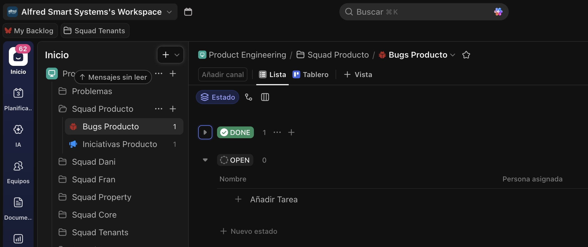
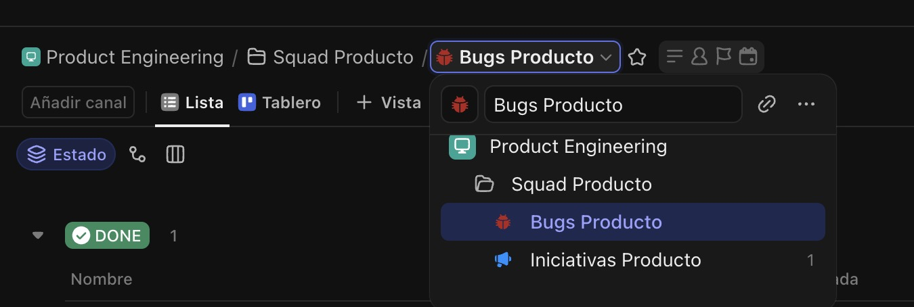
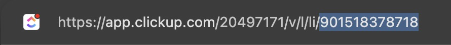

Ayuda · ClickUp
El ID de lista le indica a RecUp dónde crear los tickets. Es un número
largo (normalmente empieza por 901...) que identifica una
lista concreta dentro de tu Workspace. Por defecto, RecUp crea los
tickets en la lista
Product Engineering / Problemas / Reportar problemas I+D.
Por protocolo de trabajo, este ID de lista no debería modificarse. No obstante, para casos específicos que lo requieran, ésta es la manera de obtenerlo y actualizarlo en RecUp.
Entra en app.clickup.com y navega hasta la lista donde quieras que se creen los tickets desde RecUp.

La lista debe estar abierta y visible.
Haz clic en los tres puntos ··· junto al nombre de la lista
→ Copy link. También puedes copiar la URL directamente
desde la barra del navegador.

Menú contextual de la lista.
El enlace tiene este formato:
https://app.clickup.com/123456/v/li/901xxxxxxxxx
El ID de la lista es el último bloque de números —
901xxxxxxxxx. Ese es el valor que tienes que pegar en
RecUp.

El ID es el último segmento de la URL.
clickup.com/) es el ID del Workspace, no de la lista. Solo
necesitas el último bloque, después de /li/.
Vuelve a RecUp, abre Ajustes y pega ese ID en el campo
ID de la lista de ClickUp. Guarda.